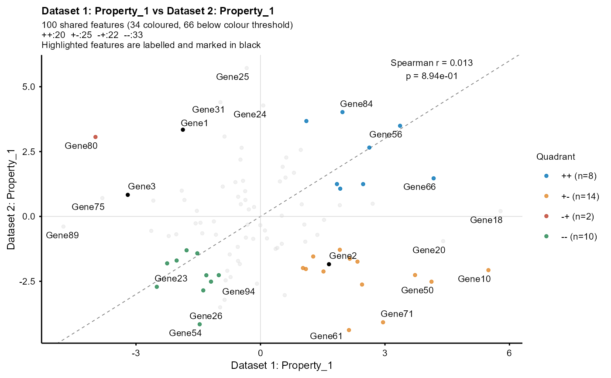
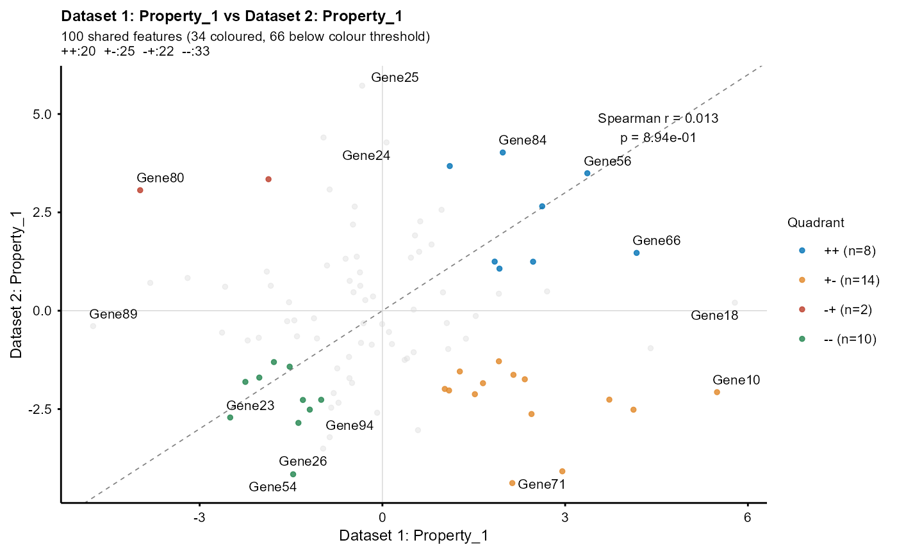
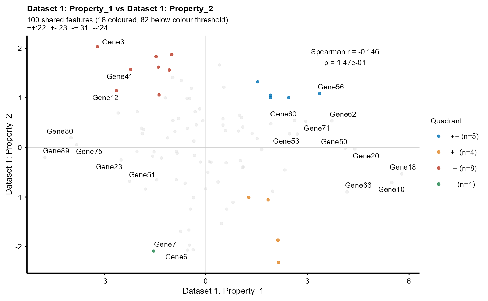

Compares two per-feature numeric properties. Features present in both
input tables are matched by Feature and plotted using the selected numeric
column from each table on the x- and y-axes. When df2 is NULL, two columns
from df1 are compared.
Usage
plot_scatter(
df1,
df2 = NULL,
col1,
col2,
name1 = NULL,
name2 = NULL,
highlight_features = NULL,
label_top_n = 0,
label_threshold = NULL,
show_cor = TRUE,
cor_method = c("spearman", "pearson", "kendall"),
colour_threshold = NULL,
fontsize = 8,
show_diagonal = NULL,
...
)Arguments
- df1
Data frame with columns
Featureand a numeric value column (e.g., logFC, variance proportion).- df2
Optional data frame for the second property. When NULL,
df1is used for both properties.- col1
Name of the numeric column in
df1to plot on the x-axis (e.g.,"logFC").- col2
Name of the numeric column in
df2to plot on the y-axis.- name1
Label for dataset 1 (x-axis). Default:
"Dataset 1: <col1>".- name2
Label for dataset 2 (y-axis). Default:
"Dataset 2: <col2>".- highlight_features
Optional: character vector of feature names to label and mark in black. Features not shared by both datasets are reported and ignored.
- label_top_n
Number of top features to label per quadrant. Can be:
A single integer: same number of labels for all four quadrants.
A vector of 4 integers: labels for quadrants (++, +-, -+, –) respectively. Use
c(5, 3, 3, 5)or namedc("++"=5, "+-"=3, "-+"=3, "--"=5). Within each quadrant, features are ranked by distance from origin (sqrt(x^2 + y^2)). These features are labelled along with threshold-qualified and highlighted features. Default: 0 (no additional labels).
- label_threshold
Minimum absolute value for labelling. A single value applies to both axes, or use a named numeric vector, e.g.,
c(x = 1, y = 0.5). Both the absolute x and absolute y values must meet their respective thresholds. Qualifying features are labelled along with the top-N and highlighted features. Default: NULL.- show_cor
If TRUE (default), annotate the plot with the correlation coefficient and p-value between the two properties.
- cor_method
Correlation method:
"spearman"(default),"pearson", or"kendall".- colour_threshold
Minimum absolute value for point colouring. A single value applies to both axes, or use a named numeric vector, e.g.,
c(x = 1, y = 0.5). Points are coloured only when both absolute x and y values meet their respective thresholds; points below either threshold are shown as grey. Default: NULL (colour all points).- fontsize
Base font size (default: 8).
- show_diagonal
If NULL (default), show the dashed
y = xline when comparing the same property across two data frames. Set TRUE or FALSE to override this behaviour.- ...
Additional arguments passed to
ggrepel::geom_text_repel()for controlling label appearance.
Examples
# Simulated per-feature numeric properties
df_1 <- data.frame(
Feature = paste0("Gene", 1:100),
Property_1 = rnorm(100, 0, 2),
Property_2 = rnorm(100, 0, 1),
stringsAsFactors = FALSE
)
df_2 <- data.frame(
Feature = paste0("Gene", 1:100),
Property_1 = rnorm(100, 0, 2),
stringsAsFactors = FALSE
)
plot_scatter(df_1, df_2,
col1 = "Property_1", col2 = "Property_1",
colour_threshold = 1, label_top_n = 5,
highlight_features = c("Gene1", "Gene2", "Gene3")
)

# Per-quadrant control: 5 labels in concordant, 2 in discordant
plot_scatter(df_1, df_2,
col1 = "Property_1", col2 = "Property_1",
colour_threshold = 1,
label_top_n = c("++" = 5, "+-" = 2, "-+" = 2, "--" = 5)
)

# Compare two properties from one data frame
plot_scatter(df_1, col1 = "Property_1", col2 = "Property_2",
colour_threshold = 1, label_top_n = 5)
